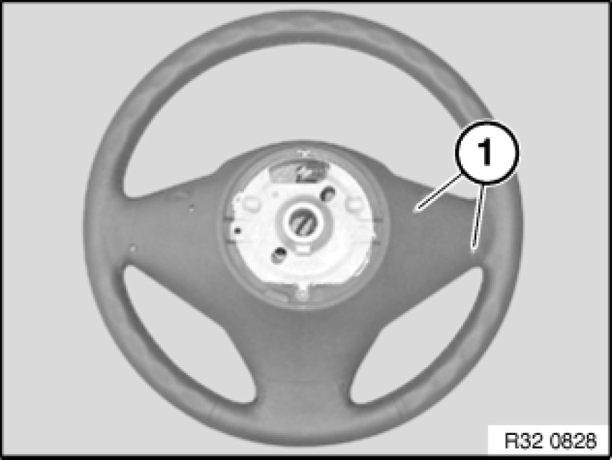
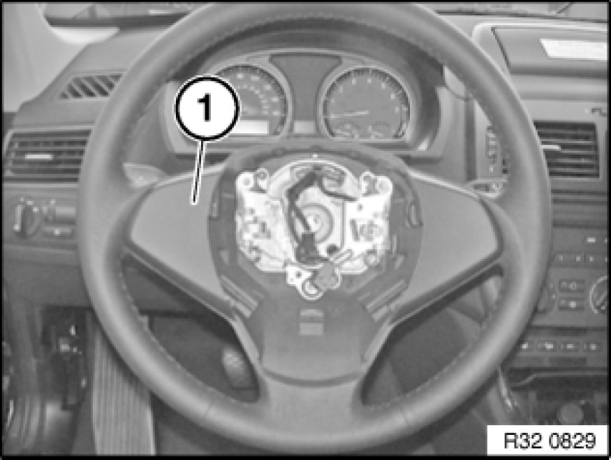

Replacing Left or Right Cover for Steering Wheel (From 09/06)
32 33 ... - Replacing left or right cover for steering wheel (from 09/06)

Necessary preliminary tasks:
- Remove airbag unit Removing and Installing/Replacing Airbag Unit (From 09/06)

Note:
For simplification purposes, the illustration shows how to release the screws on the removed steering wheel.
Release screws (1) with Torx screwdriver (T10).

Unclip cover (1).